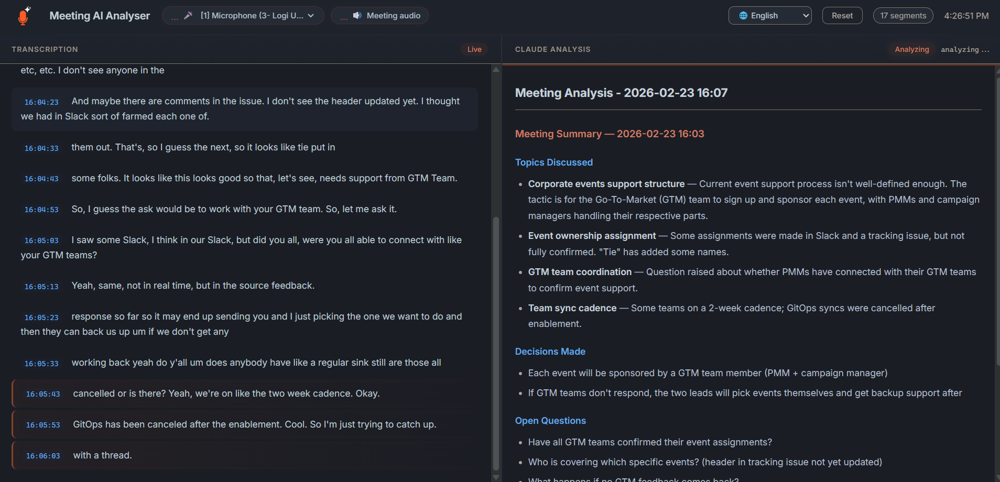

Understand, follow and master any meeting with Claude AI by your side
Meeting AI Analyser is a live co-pilot for Windows meetings: real-time local transcription, translation, jargon explanations and structured summaries powered by Claude. Audio stays 100% on your PC, and it runs on the Claude subscription you already pay for (or your own Anthropic API key), so there are no per-minute SaaS fees.
No credit card for trial. No bot in your call. 14-day money-back guarantee on Pro. AI analysis works with a Claude subscription (via Claude Code CLI) or your own Anthropic API key.

See Meeting AI Analyser in action
35-second demo: live local transcription, Claude AI summaries, no bot in the call.
Meeting AI Analyser: one AI assistant, every kind of meeting
Whatever the topic - technical, legal, financial, foreign-language - Meeting AI Analyser listens along with Claude, decodes what's being said and hands you the takeaways. Local Whisper transcription, AI-powered insights via Claude.
Real-Time Transcription
Captures system audio and microphone simultaneously using Whisper AI. Works with Teams, Zoom, Google Meet, in-person meetings, or any software playing audio.
AI Analysis & Explanations
Claude generates structured summaries every 60 seconds - decisions, action items, next steps - and can also explain technical jargon, acronyms or unfamiliar concepts on the fly.
Privacy-First
Transcription runs locally using Whisper - no audio is ever uploaded. Only the text transcript is sent to Claude AI for analysis.
Conversation Memory
Resume previous Claude sessions to build on past context. Pick any conversation from a dropdown - your AI analyst remembers earlier meetings and delivers deeper, more relevant analysis over time.
Multilingual & Translation
Whisper handles 90+ languages out of the box. Follow a meeting in a language you barely speak - Claude translates and summarises into your native tongue in real time.
Works with Everything
Captures audio from any application - Teams, Zoom, Google Meet, browser tabs, or any software playing audio on your system.
Built for anyone who sits through meetings
Not just devs - anyone who wants a smart, discreet assistant whispering context, summaries and translations during a call.
Non-native speakers
Joining a meeting in English, German, Spanish or any other language you don't fully master? Get a live translated transcript and on-demand explanations so you never lose the thread.
Outside your comfort zone
Sitting in a technical, legal, medical or financial review? Claude explains acronyms, decodes jargon and gives you the big picture without interrupting the speaker.
Developers & tech leads
Capture architectural decisions, action items and tickets in real time. Stay focused on the discussion instead of taking notes - the AI has your back.
Managers & PMs
Walk out of every meeting with a clean summary: decisions, owners, deadlines, next steps - already structured and ready to share.
Consultants & sales
Stay 100% present with your client. The AI tracks needs, objections and commitments so you can debrief instantly after the call.
Students & researchers
Lectures, interviews, workshops - turn long sessions into searchable transcripts and structured notes without lifting a pen.
From install to insights in under 5 minutes
No signup. No browser extension. No bot in your meetings. Just install, launch, and let Claude do the heavy lifting.
Connect Claude — subscription or API key
For AI analysis, pick whichever you prefer: either install the Claude Code CLI with a Claude subscription (Pro, Team or Enterprise), or just paste your own Anthropic API key in the app settings - no CLI or subscription needed. Transcription alone works without either.
Launch & join your meeting
Run the installer, then launch Meeting AI Analyser from your Start menu or desktop shortcut. Open Teams, Zoom, Meet, Webex or any conferencing tool - the app captures system audio and your mic automatically, nothing joins the call, no one sees a recorder.
Follow, understand, debrief
Watch the live transcription scroll, get instant translation if needed, and let Claude push structured summaries - decisions, action items, key takeaways - every 60 seconds. Walk out of the call with notes ready to share.
Meeting AI Analyser vs Otter, Fireflies, Tactiq, tl;dv
Local audio. No bot. One-time price. See how Meeting AI Analyser stacks up against the popular cloud-based alternatives.
| Feature | Meeting AI Analyser | Otter.ai | Fireflies.ai | Tactiq | tl;dv |
|---|---|---|---|---|---|
| Local Transcription | ✓ Whisper | ✗ | ✗ | ✗ | ✗ |
| Free Tier | ✓ Unlimited | Limited | Limited | Limited | Limited |
| AI-Powered Analysis | ✓ Claude AI | ✓ | ✓ | ✗ | ✓ |
| No Bot Joins Call | ✓ | N/A | ✗ | N/A | ✗ |
| Open Source | ✓ | ✗ | ✗ | ✗ | ✗ |
| AI Conversation Memory | ✓ Resume sessions | ✗ | ✗ | ✗ | ✗ |
| Multilingual | ✓ | Limited | Limited | Limited | Limited |
| Price | 29€ one-time | $17/mo | $18/mo | $12/mo | $25/mo |
| Runs on your own Claude plan or API key | ✓ | ✗ | ✗ | ✗ | ✗ |
One payment. Yours forever.
Try every feature free for 7 days. Then pay once - €29, no subscription, free updates for life. Stop renting your meeting assistant.
Free Trial
- Real-time transcription
- Claude AI analysis
- System audio + microphone
- Local web dashboard
- Conversation memory
Pro
- Everything in Trial
- Unlimited usage
- Activate on up to 3 machines
- Free updates forever
14-day money-back guarantee
Note: AI analysis needs either a Claude subscription (via Claude Code CLI) or your own Anthropic API key (pay-as-you-go), separate from the app license. Transcription works without either.
From the Blog
Insights on meeting productivity, privacy, and AI-powered tools.
Why Local Meeting Transcription Matters for Privacy
Your meetings contain sensitive information. Here's why keeping transcription local is the smart choice.
Read more →Meeting AI Analyser vs Cloud Solutions: A Comparison
How does a local-first approach compare to Otter.ai, Fireflies, and other cloud tools?
Read more →How to Get the Most Out of Your Meeting Notes with AI
Practical tips for turning AI-generated meeting summaries into real productivity gains.
Read more →Frequently Asked Questions
Everything you need to know before trying Meeting AI Analyser.
Does my meeting audio ever leave my PC?
No. Transcription runs locally on your machine using OpenAI's Whisper model. Your audio stream is processed in memory and never uploaded anywhere. Only the resulting text transcript is sent to Claude AI (via the Claude Code CLI) for analysis and you can disable this entirely for fully offline use.
Which meeting tools does Meeting AI Analyser work with?
It works with anything that plays audio on your PC: Microsoft Teams, Zoom, Google Meet, Webex, Discord, Slack huddles, browser tabs, recorded videos, even in-person meetings captured by your microphone. There is no integration to set up the app captures system audio via the standard Windows audio stack (WASAPI).
Does a bot join my call?
No. Unlike Fireflies, Otter Assistant, or tl;dv, nothing joins your meeting. Capture happens locally on your own machine, so other participants never see a bot or recorder in the call.
Do I need a Claude subscription, or can I use an API key?
Either works. You can run AI analysis through the Claude Code CLI with your existing Claude Pro, Team, or Enterprise plan (analysis cost is covered by your subscription, no per-minute fees) - or paste your own Anthropic API key (pay-as-you-go, no subscription or CLI required). Pick the mode in the app settings. Transcription alone works without either.
Which languages does Meeting AI Analyser support?
Whisper handles 90+ languages out of the box - English, French, Spanish, German, Italian, Portuguese, Dutch, Polish, Russian, Arabic, Chinese, Japanese, Korean and many more. Claude can translate the transcript and deliver summaries in the language of your choice, perfect for non-native speakers joining a call in a foreign tongue.
Is Meeting AI Analyser only for developers?
Not at all. Developers and tech leads love it for capturing decisions, tickets and architectural notes, but it's built for everyone who sits in meetings: managers, product owners, consultants, sales teams, lawyers, doctors, students, and non-native speakers needing live translation and explanations of unfamiliar topics.
How is this different from Otter.ai, Fireflies, or Tactiq?
Three core differences: (1) transcription is local cloud tools upload your audio; (2) it's a one-time €29 purchase instead of a monthly subscription; (3) no bot participates in your meeting. See the full comparison table.
What are the system requirements?
Windows 10 or Windows 11, roughly 4 GB of RAM free for the Whisper model (smaller models work on lower-spec machines), and a modern multi-core CPU. A GPU is optional but accelerates larger Whisper models. AI analysis needs either a Claude subscription (via the Claude Code CLI) or your own Anthropic API key - no subscription or CLI required.
How much does Meeting AI Analyser cost?
Free for 7 days with every feature unlocked. After that, a single one-time payment of €29 gives you a Pro license for up to 3 machines, with free updates forever. No subscription.
Is Meeting AI Analyser open source?
Yes. The code is available on GitHub so you can audit exactly how your audio and transcripts are handled.
Never sit through another meeting alone.
Try Meeting AI Analyser free for 7 days - or unlock Pro for €29 and keep it for life. Local, private, and ready in 5 minutes.
Windows 10 & 11. AI analysis via a Claude subscription (Claude Code CLI) or your own Anthropic API key.